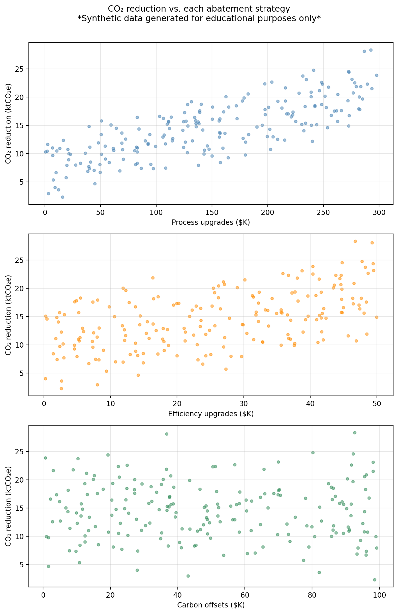

Multiple linear regression
In this lesson we introduce:
- The multiple linear regression (MLR) model
- How MLR coefficient estimates can differ from SLR estimates
- The \(F\)-statistic for testing whether any predictor is related to the response
- \(R^2\) and adjusted R^2 in multiple regression
- Variable selection: forward, backward, and mixed selection strategies
These notes are based on chapter 3.2 of An Introduction to Statistical Learning with Applications in Python (James et al. 2023). The example data is synthetic and was generated with the aid of Claude Code for the purpose of this lesson.
A guiding example: emissions-reduction strategies scenario
In this lesson we use the same example dataset as in our simple linear regression lesson. In this scenario, a research consortium tracks 200 manufacturing firms across different industries and regions. For each firm they record annual spending on three emissions-reduction strategies and the resulting CO₂ savings:
process— investment in cleaner production processes ($K/year)efficiency— investment in energy efficiency upgrades ($K/year)offsets— carbon offset purchases ($K/year)co2_reduction— annual CO₂ emissions reduced (thousand metric tons, ktCO₂e)
The central question is: do these investments actually drive emissions reductions, and if so, by how much?
The figure below shows co2_reduction plotted against each predictor separately.
The multiple linear regression model
Suppose we have a response variable \(Y\) associated with \(p\) predictors \(X_1, \ldots, X_p\). The multiple linear regression (MLR) model assumes the predictors are related with the response by the formula:
\[Y = \beta_0 + \beta_1 X_1 + \beta_2 X_2 + \cdots + \beta_p X_p + \epsilon,\]
where each \(\beta_j\) is a number called a coefficient and \(\epsilon\) is an error term.
Example
In our example dataset:
- \(Y =\)
co2_reductionis the response variable - \(p = 3\) is the number of predictors
- \(X_1 =\)
processis predictor 1 - \(X_2 =\)
efficiencyis predictor 2 - \(X_3 =\)
offsetsis predictor 3
So the MLR model takes the form:
\[\texttt{co2\_reduction} = \beta_0 + \beta_1 \cdot \texttt{process} + \beta_2 \cdot \texttt{efficiency} + \beta_3 \cdot \texttt{offsets} + \epsilon.\]
Estimating the coefficients
As usual, our goal is to estimate the unknown coefficients \(\beta_i\) using available data. This will give us a a function \(\hat{f}\) we can use as a model for this scenario:
\[\hat{f}(X_1, \ldots, X_p) = \hat{\beta}_0 + \hat{\beta}_1X_1 + \ldots + \hat{\beta}_pX_p.\]
In this case, we have a training set \(\{(x_1, y_1), \ldots, (x_n, y_n)\}\) with \(n\) observations to fit the model. For each of the observations \((x_i, y_i)\) we have that:
- \(x_i = (x_{i1}, x_{i2}, \ldots, x_{ip})\) is a vector of \(p\) predictor values, and
- \(y_i\) is the response associated to \(x_i\).
Just as in a simple linear regression, we find \(\hat{\beta}_0, \hat{\beta}_1, \ldots, \hat{\beta}_p\) by minimizing the residual sum of squares (RSS):
\[ \begin{align} RSS &=& \sum_{i=1}^{n} (y_i - \hat{f}(x_i))^2 \\ &=& \sum_{i=1}^{n} (y_i - (\hat{\beta}_0 + \hat{\beta}_1x_{i1} + \ldots + \hat{\beta}_px_{ip}))^2 \\ &=& \sum_{i=1}^{n} (y_i - \hat{\beta}_0 - \hat{\beta}_1x_{i1} - \ldots - \hat{\beta}_px_{ip})^2. \end{align} \]
Notice that the RSS is a function of the coefficients \(\hat{\beta}_i\). The values \(x_i\) are fixed numbers that come from our training data. In practice, the computer finds the coefficients \(\hat{\beta}_i\) that minimize the RSS for us.
Once we have found coefficients that minimize the \(RSS\) we obtain our model
\[\hat{f}(X_1, \ldots, X_p) = \hat{\beta}_0 + \hat{\beta}_1X_1 + \ldots + \hat{\beta}_pX_p.\]
We can use \(\hat{f}\) to predict what will be the value of \(Y\) at a new observation \((x_1, \ldots, x_p)\) by simply plugging in each \(x_i\) in the corresponding variable:
\[\hat{y} = \hat{\beta}_0 + \hat{\beta}_1 x_1 + \hat{\beta}_2 x_2 + \cdots + \hat{\beta}_p x_p.\]
Interpreting the MLR coefficients
We can interpret the coefficients to gain insight about how each predictor \(X_i\) is associated with the response variable \(Y\):
the coefficient \(\hat{\beta}_j\) represents the average change in \(Y\) associated with a one-unit increase in \(X_j\), holding all other predictors fixed.
Notice that the interpretation of each coefficient includes the crucial phrase: holding all other predictors fixed, which is a key difference between MLR and SLR.
For our example data, the estimated coefficients are:
Predictor MLR coeff
process 0.0461
efficiency 0.1831
offsets -0.0088We can interpret the coefficient associated with the process variable as
\(\hat{\beta}_1\) is the average change in CO₂ reduction associated with a $1K increase in process upgrade spending, assuming efficiency spending and offset purchases remain unchanged.
Check-in
Looking at the MLR coefficients above:
- What is the interpretation of the
efficiencycoefficient of 0.1831? - What is the predicted CO₂ reduction for a firm that spends $100K on process upgrades, $20K on efficiency, and $50K on offsets?
- The
offsetscoefficient is very small and negative. What does that mean?
Discussion
Each additional $1K in energy efficiency upgrades is associated with 0.1831 ktCO₂e of additional CO₂ reduction, holding process and offset spending constant.
Using our model, the estimate is given by \(\hat{y} = \hat{\beta}_0 + \hat{\beta}_1 \cdot 100 + \hat{\beta}_2 \cdot 20 + \hat{\beta}_3 \cdot 50.\) Computing this we obtain:
Predicted CO₂ reduction: 11.29 ktCO₂e- It means if we hold process and efficiency spending constant, higher offset purchases are associated with a slightly lower CO₂ reduction. Remember this data is synthetically generated, the true coefficient on
offsetsin the data-generating model is \(-0.001\), which is nearly zero, so the model is recovering something close to the truth. In real data a negative coefficient like this might also reflect that firms who buy offsets have already reduced operational emissions as much as they can.
\(p\)-values for the coefficents
In standard linear regression (SLR) we have one variable and one response being modelled by \(Y \approx \beta_0 + \beta_1X\). After we have found estimates for \(\hat{\beta}_0\) and \(\hat{\beta}_1\), we can examine whether there is a relationship between \(X\) and \(Y\) by computing the \(p\)-value associated to \(\hat{\beta}_1\). If the \(p\)-value is small enough, we conclude the coefficient \(\hat{\beta}_1\) is significantly different from 0 and there is evidence of a relationship between \(X\) and \(Y\).
When we fit a MLR model, which has more than one variable, we can obtain the \(p\)-value for each parameter \(\hat{\beta}_j\). In this case, we use the \(p\)-value associated to the coefficient \(\beta_j\) to understand the partial effect of adding the variable \(X_j\) into the model, when all other variables are held fixed.
Interpreting the \(p\)-value
- Small \(p\)-value for \(\hat{\beta}_j\) means \(X_j\) is informative given the other predictors are in the model.
- Large \(p\)-value for \(\hat{\beta}_j\) means \(X_j\) adds little beyond what the others already capture.
For our example data we have that:
Predictor MLR coeff MLR p-value
process 0.0461 < 0.0001
efficiency 0.1831 < 0.0001
offsets -0.0088 0.0193We can interpret the \(p\)-value associated with the process variable as
there is a relationship between the
processpredictor and the response variableco2_reduction, when theefficiencyandoffsetsremain fixed.
Check-in
The offsets variable has a large \(p\)-value of 0.0193. What does this \(p\)-value tell us in the context of this MLR model?
Discussion
The large \(p\)-value is detecting that offset spending contributes almost nothing beyond what process and efficiency already capture. In MLR, the \(p\)-value for a coefficient tests whether that variable adds information beyond what the other predictors already explain. A large p-value for offsets means that, given process and efficiency are already in the model, adding offset spending does not significantly improve the fit.
This is different from asking whether offsets has any relationship with CO₂ reductions in general. If we ran an SLR of co2_reduction on offsets alone, the result might look different because the SLR coefficient would absorb any correlation between offsets and the other predictors.
Comparing MLR to individual SLRs
A natural question is: why bother with MLR? Why not fit one SLR for each predictor and look at the results separately?
The problem is that individual SLR coefficients can be misleading when predictors are correlated. When two predictors are correlated, each one’s SLR coefficient absorbs part of the other’s effect. In cases where the predictors are strongly correlated, the SLR coefficients can be substantially biased relative to the “true” marginal effects captured by the MLR coefficients.
For example, if firms that invest heavily in process upgrades tend to also invest heavily in efficiency, an SLR of co2_reduction on process alone will give a coefficient that also reflects some of the efficiency effect. The MLR coefficient for process strips out the efficiency effect and reflects only the direct relationship of process.
As seen below, in our example dataset the SLR and MLR coefficients are similar because the three predictors were drawn independently (approximately uncorrelated by construction). In real datasets, predictors are typically correlated and the divergence between SLR and MLR coefficients can be much larger, sometimes even reversing the sign of a coefficient.
Predictor SLR coeff SLR p-value MLR coeff MLR p-value
process 0.0460 < 0.0001 0.0461 < 0.0001
efficiency 0.1793 < 0.0001 0.1831 < 0.0001
offsets -0.0060 0.6153 -0.0088 0.0193Hypothesis testing
Through hypothsis testing, we investigate whether there are relations between the predictors and the responses.
Remember that in SLR, \[Y \approx \beta_0 + \beta_1 X,\]
so no relationship between \(Y\) and the predictor \(X\) occurs when \(\beta_1=0\). Our hypotheses for the SLR hypothesis test then were:
- \(H_0\): \(\beta_1=0 \Rightarrow\) no relationship between response and predictor, and
- \(H_a\): \(\beta_1\neq0 \Rightarrow\) some relationship between response and predictor.
To investigate whether \(H_0\) is true, we test how far \(\hat{\beta}_1\) is from 0 relative to its uncertainty: this is what the \(t\)-statistic measures. We then ask what is the probability to observe at \(t\) value as extreme as this if \(\beta_1=0\): this probability is the \(p\)-value. If the \(p\)-value is small, then there is evidence of a relationship.
For multiple regression we have that
\[Y \approx \beta_0 + \beta_1X_1 + \ldots + \beta_p X_p,\]
so no relationship between \(Y\) and the predictors \(X_1, \ldots, X_p\) happens when \(\beta_1 = \ldots = \beta_p = 0\). So our hypotheses this time are:
- \(H_0\): \(\beta_1 =... =\beta_p=0 \Rightarrow\) no relationship between \(Y\) and any predictor \(X_1, \ldots, X_p\), and
- \(H_a\): at least one \(\beta_j \neq 0 \Rightarrow\) some relationship between response and some predictor.
Effectively, we are investigating the question Is any predictor related to the response?
The \(F\)-statistic
Instead of the \(t\)-statistic, to test these hypotheses we use the \(F\)-statistic:
\[F = \frac{(TSS - RSS)/p}{RSS/(n - p - 1)}\]
where:
- \(TSS = \sum(y_i - \bar{y})^2\) is the total variability in \(Y\),
- \(RSS = \sum(y_i - \hat{y}_i)^2\) is the variability unexplained by the model,
- \(p\) is the number of predictors,
- \(n\) is the number of observations in our training data, and
- \(n - p - 1\) are the residual degrees of freedom.
The numerator measures how much variance the predictors collectively explain; the denominator measures how much variance remains unexplained per degree of freedom.
Interpreting the \(F\)-statistic
- If \(H_0\) is true (no predictor is related to \(Y\)), we expect \(F \approx 1\). This means the explained variance is about the same as the unexplained variance per degree of freedom.
- If \(H_a\) is true (at least one predictor is related), the numerator will be larger than the denominator, giving \(F > 1\). The larger the \(F\), the stronger the evidence against \(H_0\).
Finally, after we have the \(F\)-statistic, we ask: what is the probability of observing an \(F\) this large (or larger) assuming \(H_0\) is true? This probability is the \(p\)-value for the \(F\)-statistic. As before, a small \(p\)-value implies we can reject \(H_0\) and at least one predictor is associated with the response.
Check-in
For our example MLR, the \(F\)-statistic is 612.1 with an associated \(p\)-value of < 0.0001. What can we say about the relation of co2_reduction with the predictors?
Discussion
An \(F\)-statistic of 612.1 (with \(p \ll 0.05\)) gives very strong evidence that at least one of the three predictors is associated with CO₂ reductions. We reject \(H_0\).
Why not just use individual p-values?
You might wonder: if we already have a \(p\)-value for each coefficient, why do we need the \(F\)-statistic and its \(p\)-value?
When the number of predictors \(p\) is large, some individual \(p\)-values will be small just by chance, even when none of the predictors are truly related to \(Y\). For example, suppose that \(p = 100\) and all null hypotheses \(H_0: \beta_j = 0\) are true, so no variable is truly associated with the response. We would still expect about 5 of the 100 \(p\)-values to fall below 0.05 by random chance alone.
The \(F\)-statistic jointly tests all coefficients at once and naturally accounts for the number of predictors, making it the correct first tool for asking “is any predictor related to \(Y\)?”
Overall, when \(p\) is small relative to \(n\), the \(F\)-test and the individual \(t\)-tests tend to agree. The \(F\)-test becomes especially important when \(p\) is large. Relying on individual \(p\)-values alone in that setting can lead to incorrect conclusions.
Model fit: \(R^2\) in multiple regression
The \(R^2\) statistic is defined the same way as in SLR:
\[R^2 = 1 - \frac{RSS}{TSS}\]
It still measures the proportion of variance in \(Y\) explained by the model. However, in MLR there is an important caveat: adding a predictor to the model will always increase \(R^2\) (or leave it unchanged), even if that predictor has no real relationship with \(Y\). This happens because any additional variable can absorb a small amount of random noise in the training data, reducing the RSS slightly.
In addition, \(R^2\) never decreases when predictors are added, using it alone to compare models with different numbers of predictors can be misleading. The adjusted \(R^2\) corrects for this by penalizing the model for each additional predictor:
\[\bar{R}^2 = 1 - \frac{RSS/(n-p-1)}{TSS/(n-1)}\]
Unlike \(R^2\), the adjusted \(R^2\) can decrease when adding a predictor that does not improve the fit enough to justify the added complexity. It is therefore a better criterion for comparing models of different sizes.
Variable selection
Once we decide to use multiple linear regression we follow the steps:
- Fit the model
- Compute \(F\)-statistics and its \(p\)-value
- Check individual \(p\)-values for predictors.
If there’s evidence that some predictors are associated with the response, an important question is: which predictors should we include in the model? This is called variable selection. This is an important question to resolve since including unnecessary predictors does not help predictions and increases variance; leaving out important ones biases our estimates.
With \(p\) predictors there are \(2^p\) possible subsets of variables to consider. For even moderate \(p\) (say, 30 or 40) this is completely infeasible to try exhaustively. Three common automated approaches are:
Forward selection
Start with the simplest model and build up:
- Start with the null model: only an intercept, no predictors.
- Fit \(p\) simple regressions (one per predictor) and add the predictor that results in the lowest RSS.
- Fit all two-variable models that include the predictor chosen in step 2, and add the next predictor that gives the lowest RSS.
- Continue adding predictors until a stopping criterion is met (e.g., no remaining predictor produces a statistically significant improvement).
Forward selection is always applicable, but it might include variables early that later become redundant.
Backward selection
Start with the most complex model and simplify:
- Start with the full model, the MLR with all \(p\) predictors included.
- Remove the predictor with the largest \(p\)-value (least statistically significant).
- Refit the model with the remaining \(p-1\) predictors and repeat.
- Stop when all remaining predictors are significant at the chosen threshold.
Backward selection cannot be used when \(p > n\) (more predictors than observations), because the full model cannot be fit.
Mixed selection
Mixed selection combines the forward and backward approaches to avoid their respective limitations:
- Start with the null model.
- Forward step: add the variable that most improves the model (largest reduction in RSS).
- Backward step: after each addition, check if any currently included variable now has a \(p\)-value above the removal threshold. Adding a new variable can sometimes make a previously added one redundant. If so, remove it.
- Continue alternating forward and backward steps until no variables are added or removed.
This addresses the main limitation of forward selection: a variable added early can become unnecessary once other variables are included. Mixed selection allows such variables to be dropped rather than staying in the model indefinitely.
Check-in
For our example dataset, there are \(2^3 = 8\) possible subsets of the three predictors. The table below shows the RSS for every possible model:
Predictors in model RSS
(intercept only) 5016.8
process 1950.3
efficiency 3601.4
offsets 5010.4
process + efficiency 497.5
process + offsets 1949.8
efficiency + offsets 3571.4
process + efficiency + offsets 483.8Using the table above, manually trace through the three steps of forward selection:
- Step 1 — Start with the null model. Which single predictor gives the largest reduction in RSS? What would be the RSS after adding it?
- Step 2 — With that predictor already in the model, which one would be added in second place?
- Step 3 — Adding the final predictor, does it meaningfully reduce the RSS compared to the two-predictor model? What criteria could be used to decide whether to add or not the final predictor?
Discussion
Step 1: Comparing the three single-predictor models,
processgives the lowest RSS. Forward selection addsprocessfirst. This is consistent with the scatter plots seen earlier, whereprocessshowed the strongest linear association with CO₂ reductions.Step 2: With
processalready included, we compareprocess + efficiencyandprocess + offsets. Theprocess + efficiencymodel has the lower RSS, soefficiencyis added second. The reduction from step 1 to step 2 is substantial, reflecting thatefficiencyspending is genuinely associated with CO₂ reductions in the data-generating model.Step 3: Adding
offsetsto the two-predictor model produces only a very small further reduction in RSS. This matches its near-zero true coefficient (\(-0.001\)) and large \(p\)-value in the MLR output. Whether we includeoffsetsat this step depends on the stopping criterion: if we require a minimum RSS improvement, it would likely not be added.
Forward and backward selection can be run using metrics other than RSS. In fact, using raw RSS as the sole criterion would always favor adding more predictors (RSS can only decrease or stay the same when a predictor is added). An alternative that penalizes model complexity is using the adjusted \(R^2\).
References
James, Gareth, Daniela Witten, Trevor Hastie, Robert Tibshirani, and Jonathan E. Taylor. 2023. An Introduction to Statistical Learning: With Applications in Python. Springer Texts in Statistics. Cham: Springer.